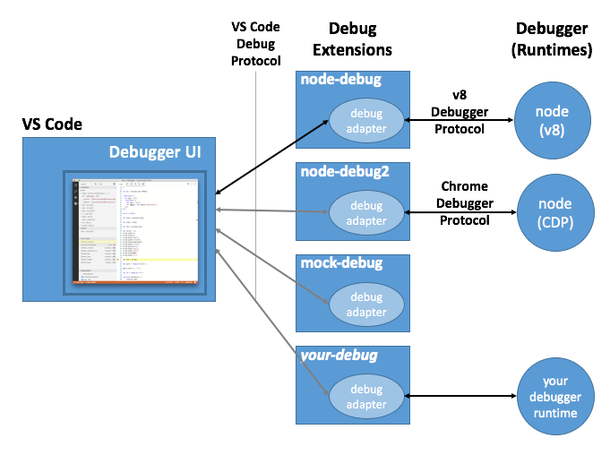
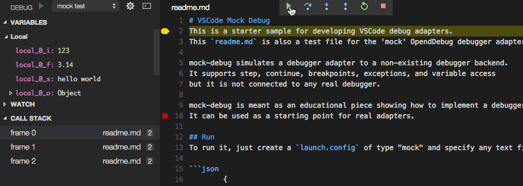
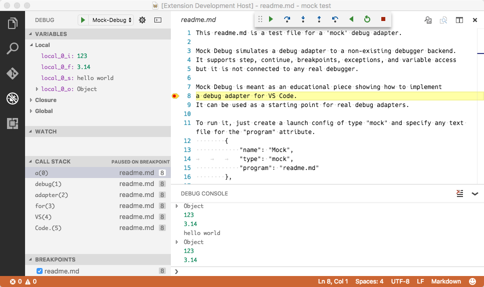
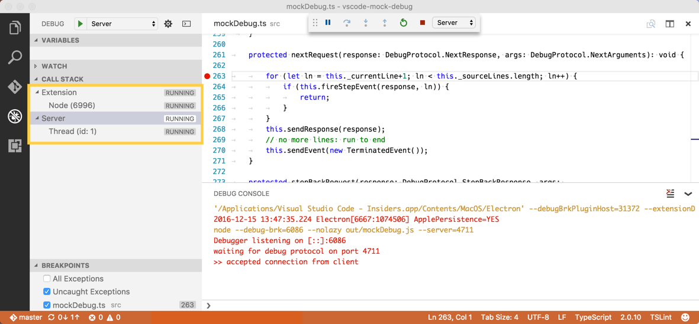
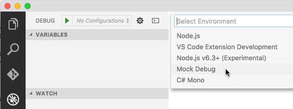

Example - Debuggers
Since Visual Studio Code implements a generic (language agnostic) debug UI, it cannot talk to real debuggers directly but instead relies on debug extensions for implementing the debugger or runtime specific functionality.
These debug extensions differ from other extensions in that their implementation is not running in the extension host, but as a separate standalone program, a so-called debug adapter. We call these programs adapters because they “adapt” the API or protocol of a concrete debugger or runtime to the VS Code Debug Protocol used by VS Code.

The reasons for implementing the debug adapters as standalone excutables are twofold: first, it makes it possible to implement the adapter in the language most suitable for the given debugger or runtime. Second, a standalone program can more easily run in elevated mode if this is required by the underlying debugger or runtime.
In order to avoid problems with local firewalls, VS Code communicates with the adapter through stdin/stdout instead of using a more sophisticated mechanism (e.g. sockets).
Every debug extension defines a debug type which is referenced from a VS Code launch configuration.
When a debug session is started, VS Code looks up the debug extension based on the debug type and launches the extension’s debug adapter executable as a separate process. When the debug session ends, the adapter is stopped.
Visual Studio Code ships with two debug extensions for Node.js: node-debug uses the (deprecated) v8 Debugger Protocol for node versions < 6.3 and node-debug2 uses the Chrome Debugger Protocol (CDP) supported by node versions >= 6.3. Many more debugger extensions are available from the VS Code Marketplace or you can create a debugger extension yourself.
The rest of this document shows how to develop a debugger extension.
The Mock Debug Extension
Since creating a debug adapter from scratch is a bit heavy for this tutorial, we will start with a simple debug adapter which we have created as an educational debug adapter ‘starter kit’. It is called Mock Debug because it does not talk to a real debugger but it ‘mocks’ one. So Mock Debug simulates a debugger and supports step, continue, breakpoints, exceptions, and variable access but it is not connected to any real debugger.
Before delving into the development setup for mock-debug, let’s first install a pre-built version
from the VS Code Marketplace and play with it:
- switch to the Extensions viewlet and type ‘mock’ to search for the Mock Debug extension,
- ‘Install’ and ‘Reload’ the extension.
To try Mock Debug:
- Create a new empty folder
mock testand open it in VS Code. - Create a file
readme.mdand enter several lines of arbitrary text. - Switch to the Debug view and press the gear icon.
- VS Code will let you select an ‘environment’ in order to create a default launch configuration. Pick “Mock Debug”.
- Press the green Start button and then Enter to confirm the suggested file ‘readme.md’.
A debug session starts and you can ‘step’ through the readme file, set and hit breakpoints, and run into exceptions (if the word exception appears in a line).

Before using Mock Debug as a starting point for your own development, we recommend to uninstall the pre-built version first:
- switch to the Extensions viewlet and click on the gear icon of the Mock Debug extension,
- run the ‘Uninstall’ action and then ‘Reload’ the window.
Development Setup for Mock Debug
Now let’s get the source for Mock Debug and start development on it within VS Code:
|
Open the project folder vscode-mock-debug in VS Code.
What’s in the package?
package.jsonis the manifest for the mock-debug extension:- it lists the contributions of the mock-debug extension,
- the
compileandwatchscripts are used to transpile the TypeScript source into theoutfolder and watch for subsequent source modifications, - the dependencies
vscode-debugprotocol,vscode-debugadapter, andvscode-debugadapter-testsupportare NPM modules that simplify the development of node-based debug adapters.
- the implementation of the debug adapter of the extension lives in
src/mockDebug.ts. Here you find the handlers for the various requests of the VS Code debug protocol. - since the implementation of debug extension lives in the debug adapter, there is no need to have extension code at all (i.e. code that runs in the extension host process). However, Mock Debug has a small
src/extension.tsbecause it illustrates what can be done in the extension code of a debug extension.
Now build and launch the Mock Debug extension by selecting the Extension launch configuration and hitting F5.
Initially this will do a full transpile of the TypeScript sources into the out folder.
After the full build, a ‘watcher task’ is started that transpiles any changes you make.
After transpiling the source, a new VS Code window (‘[Extenson Development Host]’) appears with the Mock Debug extension now running in debug mode. From that window open your mock test project with the readme.md file, start a debug session with ‘F5’, and then step through it:

Since you are running the extension in debug mode, you could now set and hit breakpoints in src/extension.ts but as I’ve mentioned above, there is not much interesting code executing in the extension. The interesting code runs in the debug adapter which is a separate process.
In order to debug the debug adapter itself, we have to run it in debug mode. This is most easily achieved by running the debug adapter in ‘server mode’ and configure VS Code to connect to it. In your VS Code vscode-mock-debug project select the launch configuration ‘server’ from the drop down menu and press the green Start button.
Since we already had an active debug session for the extension the VS Code debugger UI now enters ‘multi session’ mode which is indicated by seeing the names of the two debug sessions Extension and Server showing up in the CALL STACK view:

Now we are able to debug both the extension and the debug adapter simultanously.
A faster way to arrive here is by using the Extension + Server launch configuration which launches both sessions automatically.
Set a breakpoint at the beginning of method launchRequest(...) in file src/mockDebug.ts and as a last step configure the mock debugger to connect to the debug adapter server by adding a debugServer attribute for port 4711 to your mock test launch config:
|
If you now launch this debug configuration, VS Code does not start the mock debug adapter as a separate process but directly connects to local port 4711 of the already running server and you should hit the breakpoint in launchRequest.
With this setup you can now easily edit, transpile, and debug Mock Debug.
But now the real work begins: you will have to replace the ‘mock’ implementation of the debug adapter in src/mockDebug.ts by some ‘real’ code that talks to your debugger or runtime. This involves understanding and implementing the VS Code Debug Protocol. More details
about this can be found here.
Anatomy of the package.json of a Debug Extension
Besides providing a debugger specific implementation of the debug adapter a debugger extension needs a package.json that contributes to the various debug related contributions points.
So let’s have a closer look at the package.json of Mock Debug.
Like every VS Code extension, the package.json declares the fundamental properties name, publisher, and version of the extension. Use the categories field to make the extension easier to find in the VS Code Extension Marketplace.
|
Now take a look at the contributes section which contains the contributions specific to debug extensions.
First we use the breakpoints contribution point to list the languages for which setting breakpoints will be enabled.
Next is the debuggers section. Here one debugger is introduced under a (unique) debug type mock. The user can reference this type in his launch configurations. The optional attribute label can be used to give the debug type a nicer name when showing it in the UI.
Since the debug extension uses a debug adapter, a relative path to this is given as the program attribute.
In order to make the extension self-contained the application must live inside the extension folder.
By convention we keep this applications inside a folder named out or bin but you are free to use a different name.
Since VS Code runs on different platforms, we have to make sure that the debug adapter program supports the different platforms as well. For this we have the following options:
If the program is implemented in a platform independent way, e.g. as program that runs on a runtime that is available on all supported platforms, you can specify this runtime via the runtime attribute. As of today, VS Code supports
nodeandmonoruntimes. Our Mock Debug adapter from above uses this approach.If your debug adapter implementation needs different executables on different platforms, the program attribute can be qualified for specific platforms like this:
"debuggers": [{"type": "gdb","windows": {"program": "./bin/gdbDebug.exe",},"osx": {"program": "./bin/gdbDebug.sh",},"linux": {"program": "./bin/gdbDebug.sh",}}]A combination of both approaches is possible too. The following example is from the Mono Debug adapter which is implemented as a mono application that needs a runtime on OS X and Linux but not on Windows:
"debuggers": [{"type": "mono","program": "./bin/monoDebug.exe","osx": {"runtime": "mono"},"linux": {"runtime": "mono"}}]
configurationAttributes represents the schema for the launch.json attributes that are available for this debugger. This schema is used for validating the launch.json and supporting IntelliSense and hover help when editing the launch configuration.
initialConfigurations defines the initial content of the default launch.json for this debugger. This information is used when a project does not have a launch.json and a user starts a debug session or clicks on the gear icon in the debug viewlet. In this case VS Code lets the user pick a debugger from the list of all debuggers and then creates the corresponding launch.json:

Instead of defining the initial content of the launch.json statically in the package.json it is possible to ‘compute’ the initial content with a command that is implemented in the extension.
In this case the value for the initialConfigurations attribute must be set to a command ID:
|
And the implementation of this command lives in src/extension.ts and returns the content for the launch.json as a string (which makes it possible to include comments and precisely control the formatting):
|
configurationSnippets define launch configuration snippets that get surfaced in IntelliSense when editing the launch.json. The label attribute of a snippet is prefixed by the debugger name so that it can be clearly identified when presented in a list of all snippet proposals.
The variables contribution binds ‘variables’ to ‘commands’. These variables can be used in the launch configuration using the ${command.Xxxx} syntax and the variables are substituted by the value returned from the bound command when a debug session is started.
The implementation of a command lives in the extension and it can range from a simple expression with no UI, to sophisticated functionality based on the UI features available in the extension API.
Mock Debug binds a variable AskForProgramName to the command extension.mock-debug.getProgramName. The implementation of this command in src/extension.ts uses the showInputBox to let the user enter a program name:
|
The variable can now be used in any string typed value of a launch configuration as ${command.AskForProgramName}.
Publishing your Debug Adapter
Once you have created your debug adapter you can publish it to the Marketplace:
- update the attributes in the
package.jsonto reflect the naming and purpose of your debug adapter. - upload to the Marketplace as described in Share an Extension section.